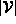
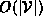
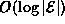
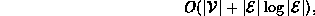
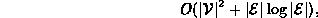
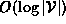
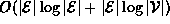
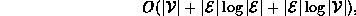
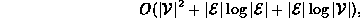

Data Structures and Algorithms
with Object-Oriented Design Patterns in Java
Data Structures and Algorithms
with Object-Oriented Design Patterns in JavaThe KruskalsAlgorithm method begins by creating an graph to hold the result spanning tree (lines 7-9). Since a spanning tree is a sparse graph the GraphAsLists class is used to represent it. Initially the graph contains  vertices but no edges. The running time for lines 7-9 is .
Next all of the edges in the input graph are inserted one-by-one into the priority queue (lines 11-19). Since there are edges, the worst-case running time for a single insertion is . Therefore, the worst-case running time to initialize the priority queue is

when adjacency lists are used, and

when adjacency matrices are used to represent the input graph.
The main loop of the method comprises lines 22-35. This loop is done at most times. In each iteration of the loop, one edge is removed from the priority queue (lines 24-25). In the worst-case this takes time.
Then, two partition find operations are done to determine the elements of the partition that contain the two end-points of the given edge (lines 26-29). Since the partition contains at most elements, the running time for the find operations is . If the two elements of the partition are distinct, then an edge is added to the spanning tree and a join operation is done to unite the two elements of the partition (lines 30-35). The join operation also requires time in the worst-case. Therefore, the total running time for the main loop is .
Thus, the worst-case running time for Kruskal's algorithm is

when adjacency lists are used, and

when adjacency matrices are used to represent the input graph.
 Copyright © 1998 by Bruno R. Preiss, P.Eng. All rights reserved.
Copyright © 1998 by Bruno R. Preiss, P.Eng. All rights reserved.